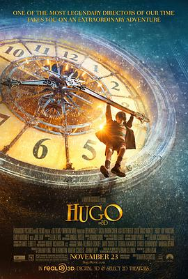

雨果 / Hugo
又名：雨果的巴黎奇幻历险(港) / 雨果的冒险(台) / 雨果的秘密 / 雨果·卡布里特的发明 / 造梦的雨果 / 发明男孩雨果 / The Invention of Hugo Cabret
作品信息
| 导演 | 马丁·斯科塞斯 |
| 编剧 | 约翰·洛根 / 布赖恩·塞尔兹尼克 |
| 主演 | 阿萨·巴特菲尔德 / 科洛·葛蕾丝·莫瑞兹 / 本·金斯利 / 萨莎·拜伦·科恩 / 裘德·洛 / 雷·温斯顿 / 克里斯托弗·李 / 理查德·格雷弗斯 / 海伦·麦克洛瑞 / 弗朗西斯·德·拉·图瓦 / 迈克尔·斯图巴 / 艾米莉·莫迪默 / 马丁·斯科塞斯 |
| 类型 | 剧情 / 儿童 / 奇幻 / 冒险 |
| 制片国家/地区 | 英国 / 美国 / 法国 |
| 语言 | 英语 |
| 上映日期 | 2012-05-31(中国大陆) / 2011-11-23(美国) |
| 片长 | 127分钟 |
| IMDb | tt0970179 |
说过什么
2021-03-05 20:00:06
广播 · 想看
最后一次看到是 2026-08-01T11:09:08+10:00 · 豆瓣原页